Personalize the noise
Translate breed, age, routine, personality, and health into a useful daily plan.
Product design · Brand identity · Business opportunity
Wiggles is a personalized dog-care ecosystem that turns the anxiety of first-time ownership into simple routines, rewarding progress, and a healthier bond.
Meet Wiggles ↓
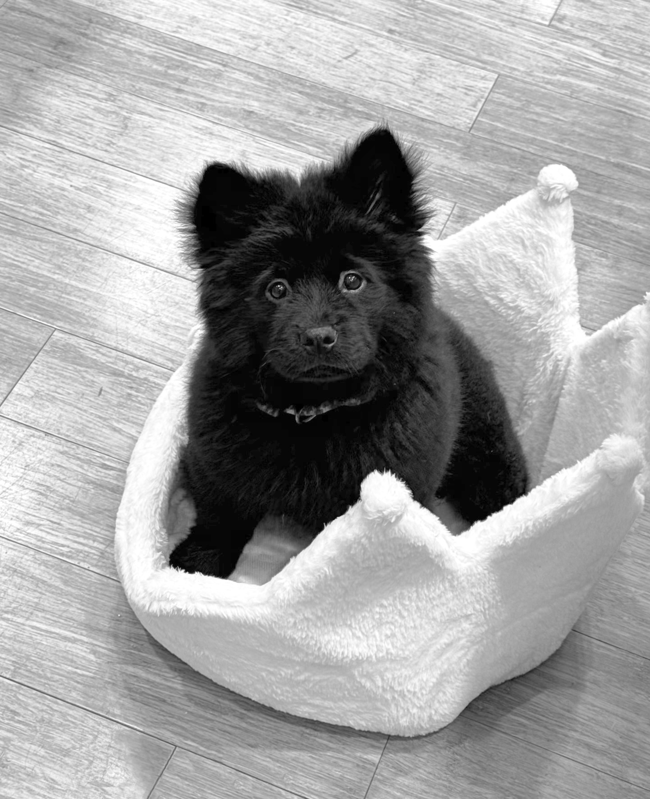
Meet Ansi · brand ambassador · excellent listenerThe opportunity
Young owners often face financial pressure, busy schedules, and a flood of conflicting information. That uncertainty can create anxiety for the owner and inconsistent care for the dog.
I designed Wiggles as a product and business system: personalized guidance builds confidence, playful routines create engagement, and connected services create sustainable revenue opportunities.
Problem framing
Young dog owners want to do the right thing, but struggle to interpret behavior, create routines, afford care, and know when a concern needs professional help.
Photography graduate student and first-time owner of a four-month-old dog.
“I feel overloaded with care information, worried when my dog is home alone, and unsure how to afford everything she needs.”
Translate breed, age, routine, personality, and health into a useful daily plan.
Break training, enrichment, grooming, and prevention into small repeatable actions.
Help owners see progress and make the economics of care feel lighter.
Identity system
Wiggles needed enough warmth to reassure nervous owners and enough structure to support health, routines, and commercial services.
The nose curve uses a golden-ratio construction. The tongue and playful Capuche wordmark make the identity memorable, while Poppins keeps product information readable.
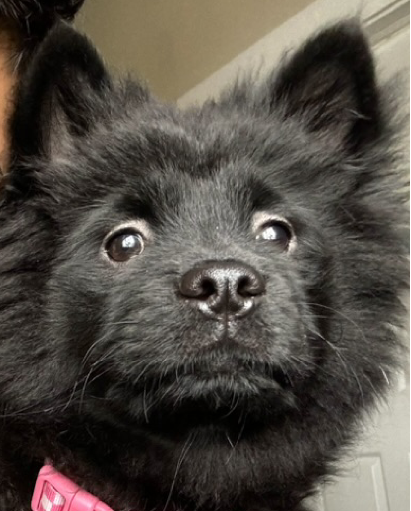
Onboarding strategy
Wiggles learns the dog’s breed, age, size, personality, routine, and health concerns so the product can prioritize what matters instead of presenting a generic library.
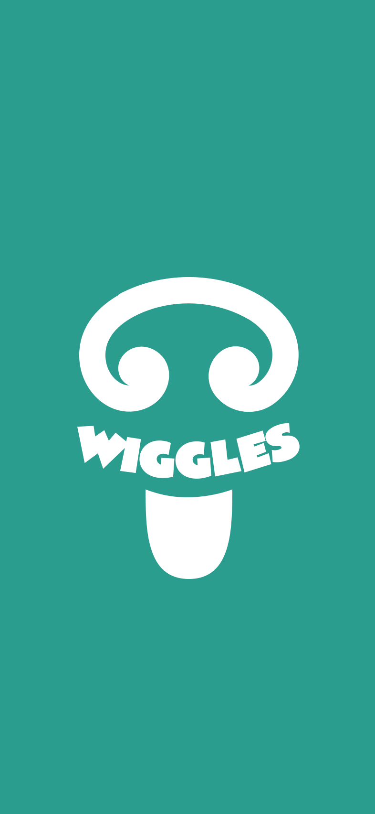
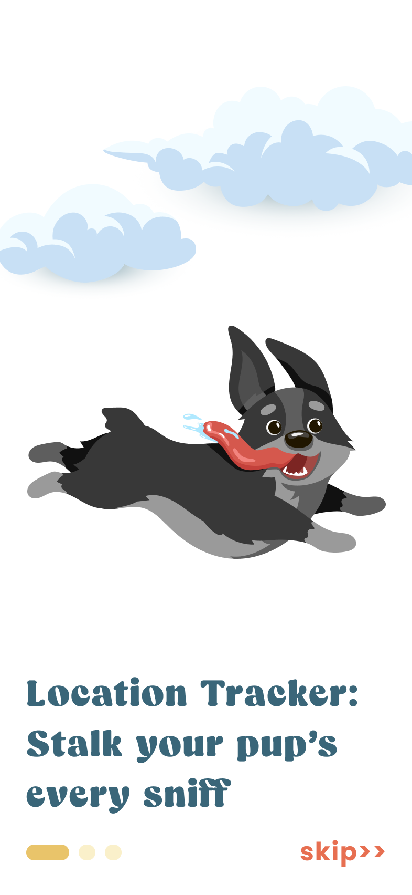
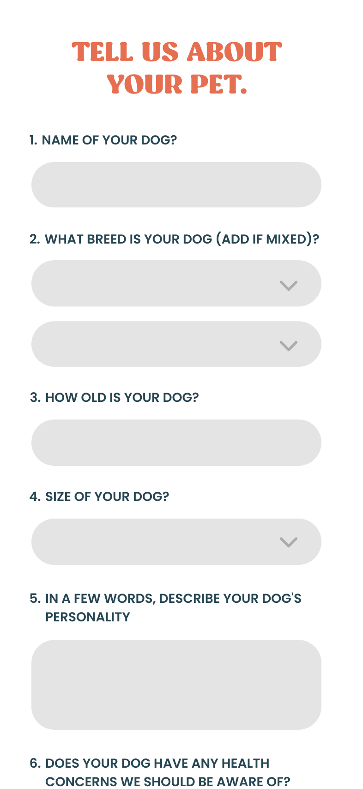
Collect only information that visibly changes the experience. Every onboarding question should lead to better routines, recommendations, reminders, or safety.
Core experience
The home experience prioritizes the dog’s current training stage, daily actions, progress, health, and relationships. Deeper libraries remain available without competing with today’s tasks.
Structured plans turn broad goals into sequenced lessons such as bonding, potty training, focus, and basic commands.
Owners know what to do today.
Product valueProgress creates a reason to return.
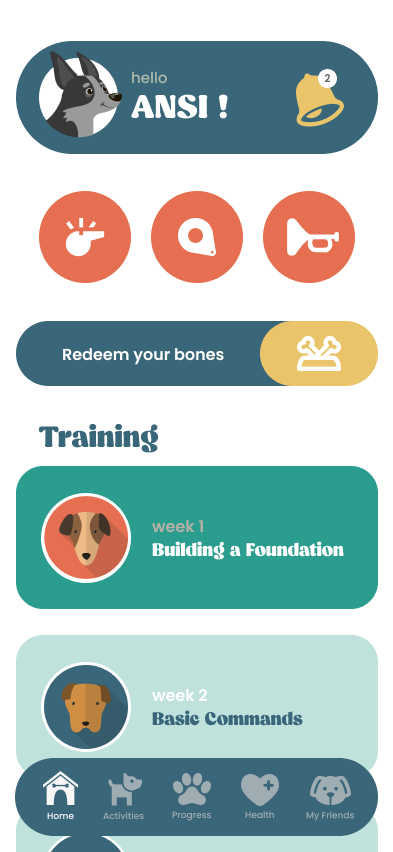
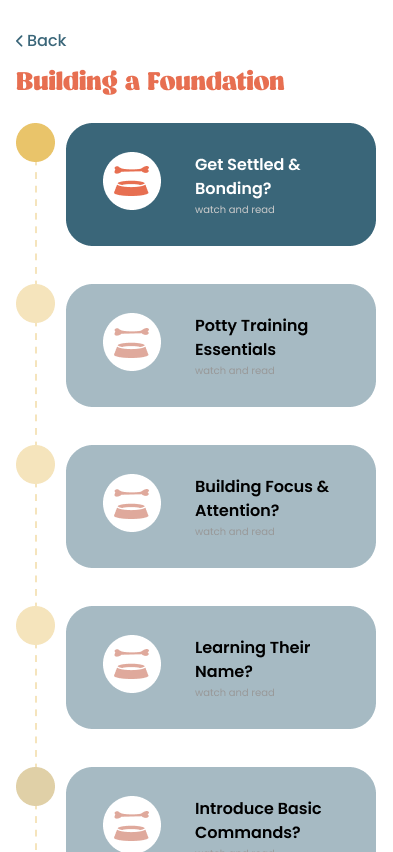
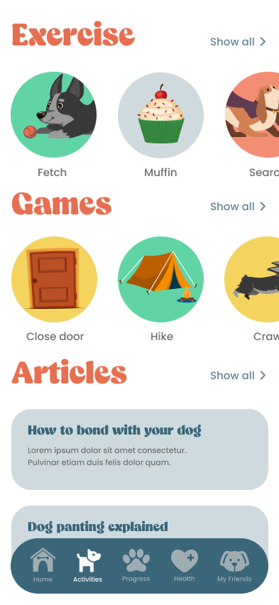
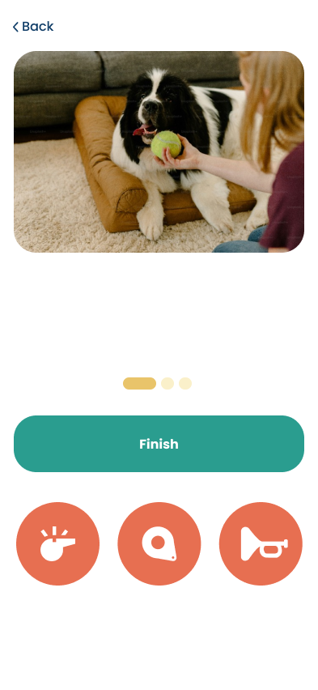
Videos and illustrated activities cover exercise, training, mental stimulation, and bonding. The interaction favors completion over passive consumption.
Make every piece of content lead to an action with the dog.
Care coordination
Health records, preventative-care reminders, appointments, and vet discovery reduce the chance that important care gets lost in a busy schedule.
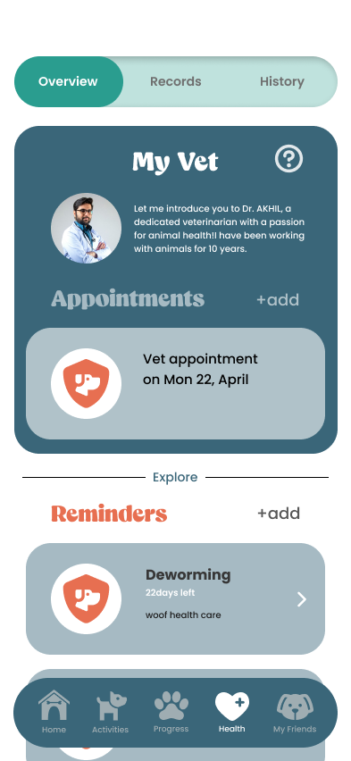
A natural-language assistant could help owners describe subtle behavior, understand potential causes, and choose a responsible next step. It should clearly distinguish home-care suggestions from issues requiring professional care.
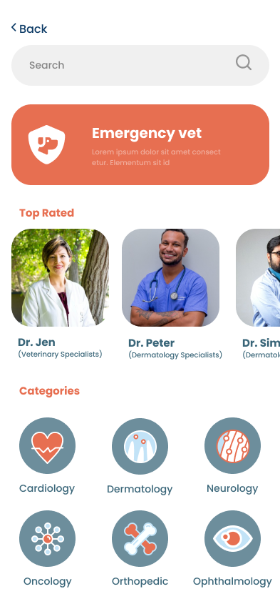
Product-led business model
The product rewards care consistency with “bones.” Owners can redeem bones for products or apply them toward Wiggit, creating a bridge between engagement and commerce.
Connected product · Wiggit
Wiggit tracks location, steps, distance, and activity. It gives owners peace of mind while expanding Wiggles beyond content into hardware, subscriptions, and richer personalization.
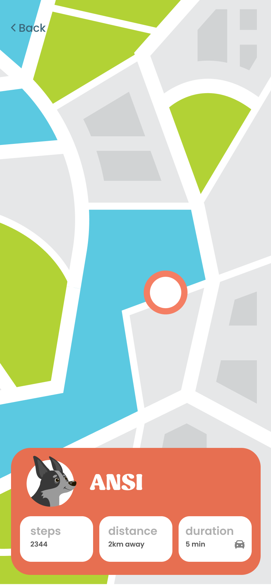
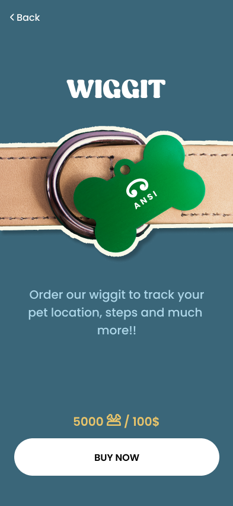
Retention with a purpose
Levels and bones celebrate real-world actions: completing training, maintaining routines, exercising, and supporting the dog’s well-being.
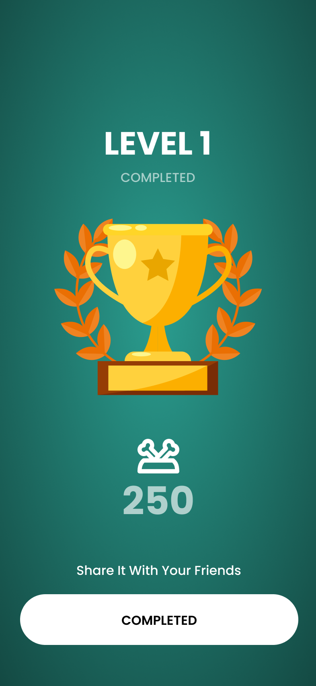
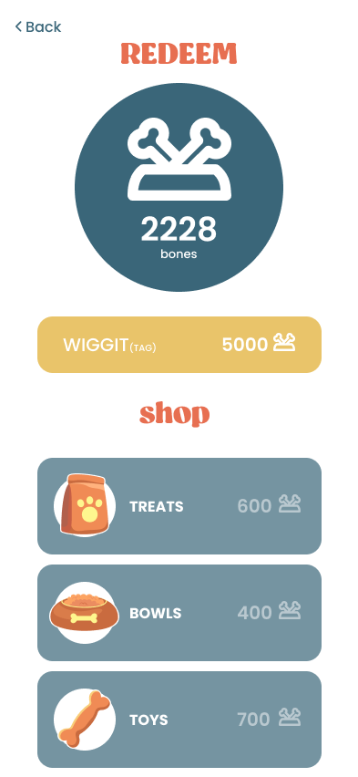
Proposed impact framework
As a concept, these are validation metrics rather than claimed outcomes.
Measure confidence interpreting needs and completing care tasks.
Measure training, enrichment, exercise, and preventative-care consistency.
Measure completed care actions rather than time spent browsing.
Measure Wiggit, premium services, and marketplace conversion.
Validate confidence and routine completion first. Introduce Wiggit and the rewards marketplace after the daily value is proven.
The original product advisor
Wiggles taught me to design the brand, experience, retention model, and revenue opportunity as one connected product.
Explore more work →